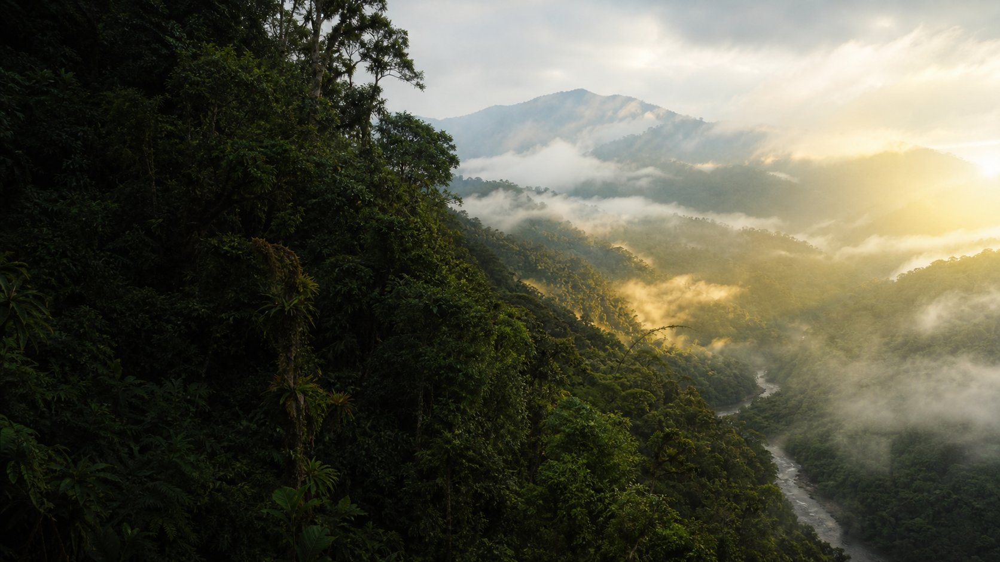

Orgánicos → compost
Restos vegetales pueden tratarse mediante compostaje controlado. Se requiere equilibrio de materiales, aireación, humedad y manejo de impropios; no mezclar residuos peligrosos o contaminados.
Opción general · depende del contexto
Investigamos necesidades ambientales, acercamos soluciones respaldadas por evidencia y conectamos a quienes quieren ser parte del cambio.
Del aprovechamiento de residuos a la protección del agua y la biodiversidad: transformemos desafíos en oportunidades, con información clara y participación ciudadana.
01 La sostenibilidad que Ecuador necesita,
las soluciones que podemos construir.
Siete áreas para comprender desafíos, consultar evidencia y descubrir opciones de acción. La relevancia de cada tema debe apoyarse en datos y contexto local.
Cómo leemos la evidencia
Distinguimos hechos documentados, interpretación y propuestas. Esta primera versión no publica cifras nacionales ni conclusiones sin respaldo verificable.
Un mapa útil empieza con registros comprobables. Por ahora no hay ubicaciones verificadas publicadas en el catálogo; no mostraremos marcadores inventados ni coordenadas aproximadas.
Filtros preparados para conectarse a registros revisados.
Iniciativas con nombre, fuente y verificación. Preferimos un espacio vacío a atribuir logros o ubicaciones sin evidencia.
Cuando se incorporen registros, cada ficha incluirá qué problema aborda, qué se ha implementado, su fuente y cuándo se verificó.
El aprovechamiento depende del material, la separación, la infraestructura y las condiciones sanitarias. No todo residuo puede compostarse o reciclarse en cualquier lugar.
Explorar guía de residuos →Restos vegetales pueden tratarse mediante compostaje controlado. Se requiere equilibrio de materiales, aireación, humedad y manejo de impropios; no mezclar residuos peligrosos o contaminados.
Opción general · depende del contextoPapel, vidrio, metales y ciertos plásticos pueden ser recuperables si están aceptados por un gestor local. Limpiar y separar según sus instrucciones; la disponibilidad varía por cantón.
Confirmar aceptación localExtender la vida útil evita desechar un producto prematuramente. Revisar seguridad, estado y posibilidad de reparación antes de reutilizar o donar.
Priorizar prevenciónBaterías, aparatos electrónicos, aceites y residuos industriales pueden requerir manejo especializado. No desarmar ni verter; consultar puntos de recepción y autoridades locales.
Precaución especializadaBusca una orientación inicial. Confirma las reglas de separación y los gestores disponibles en tu municipio antes de entregar materiales.
Encuentra empresas, organizaciones y proyectos ambientales. Los registros aparecerán cuando cuenten con fuente pública y revisión.
No se han añadido organizaciones ni proyectos. ECOREDEC incorporará fichas únicamente con información comprobable y fuentes públicas.
Sugerir un registro →Sin resultados no significa que no existan iniciativas.Estimaciones educativas a partir de tus datos. Son orientativas: se muestran supuestos y no reemplazan mediciones, recibos ni auditorías.
Registra el peso que tú ya hayas medido para obtener una proyección por periodo.
Calcula volumen a partir del caudal y la duración que introduzcas.
Potencia multiplicada por horas de funcionamiento; la energía se expresa en kWh.
La estimación requiere factores de emisión documentados y adecuados al lugar, periodo y actividad.
No publicamos un resultado sin metodología y factores verificables para Ecuador. Próximamente se indicarán fuente, año, alcance y limitaciones.
Consultar fuentes de referencia →Comparte una observación o una idea. En esta vista previa, los borradores se guardan solo en este navegador; no se envían a ECOREDEC ni a las autoridades.
No mostramos noticias ficticias. Las novedades se incorporarán con resumen original, fecha, tema, fuente y enlace al contenido original.
FECHA DE ACTUALIZACIÓN EDITORIAL: AÚN NO DISPONIBLELas fichas futuras conservarán fuente, enlace, fecha de publicación y verificación, cobertura geográfica, unidades y limitaciones metodológicas.
Los enlaces llevan a portales institucionales generales; no son citas de datos específicos. Cada afirmación publicada deberá enlazar la evidencia concreta que la sustenta.
ENVIRONMENTAL ENGINEER
Engineering a Greener Future
SUSTAINABILITY · INNOVATION · ENVIRONMENT
Ingeniería ambiental, innovación y soluciones sostenibles para transformar los desafíos ambientales en oportunidades para un futuro más verde.
ECOREDEC ECUADOR ↑